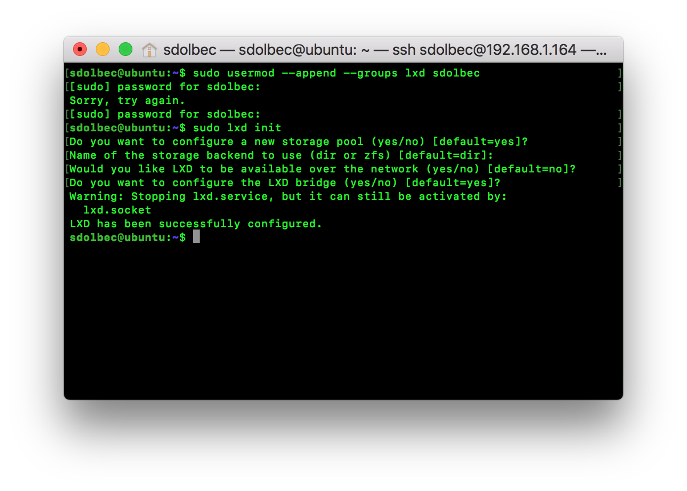
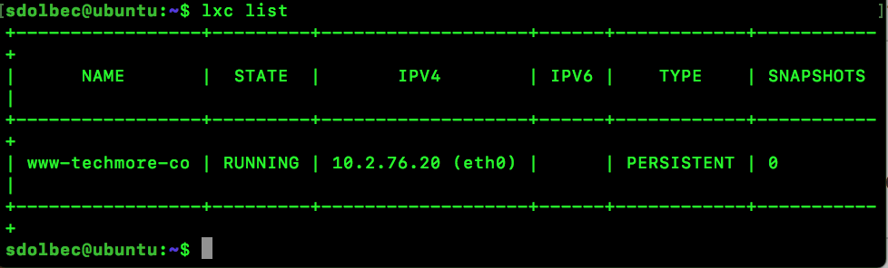

LXD install and nginx
Replacing jails with lxd, March 21, 2018
Start by adding yourself to the correct group so you don't require sudo.
sudo usermod --append --groups lxd sdolbec

Initialize lxd and configure, I kept all defaults except disabled IPv6
sudo lxd init
To create our first container use this command
lxc launch ubuntu:16.04 www-techmore-co

READ MORE
Comments: 0